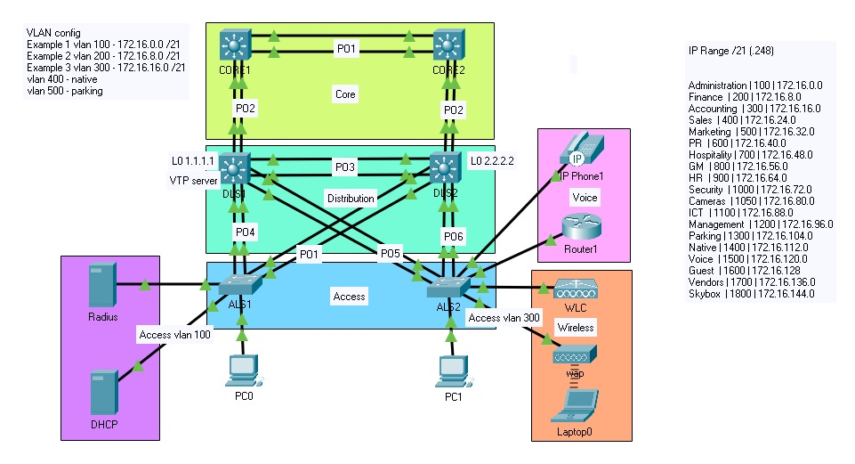
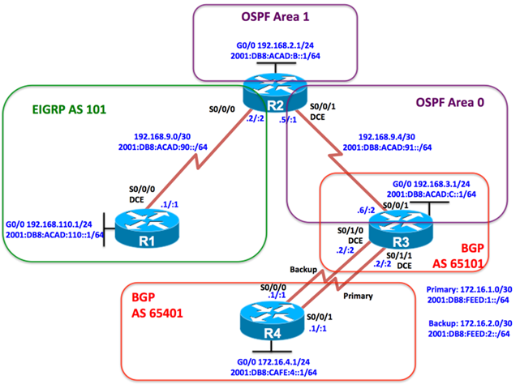
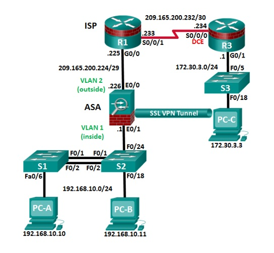
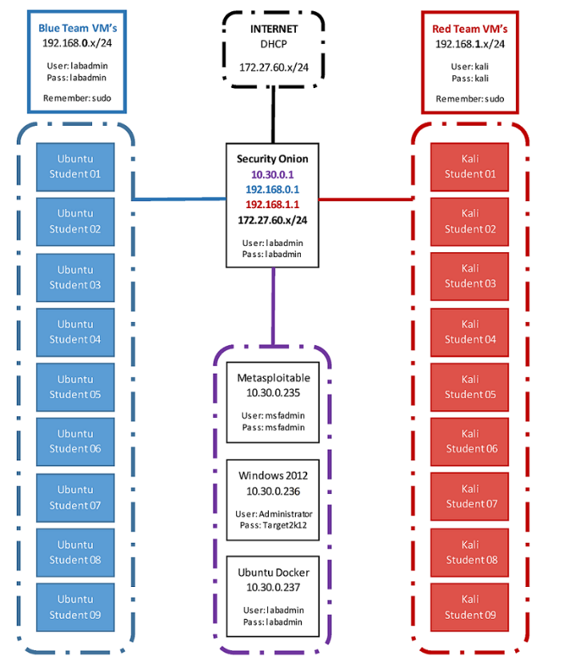

Cyber Security professional with project management & leadership experience
A quick website to showcase a bit of my experience & interests. Currently working as a Technician for JTC providing support to schools, working as a cyber associate at commonwealth bank & completing my bachelors of cyber security.
My primary site at JTC is a private school with a hybrid ad setup. At present I'm building a combination of on-prem connectors and autopilot profiles to drop new devices into groups to manage through endpoint, rather than SCCM. The overall goal is to be able to deploy batches of devices using autopilot and endpoint directly from the vendor, and then to configure those devices based on year groups or staff type to distribute certain apps and file permissions (e.g. printers, shares). A few highlights from this role include overseeing a metro upgrade project for a large campus & implementing several enterprise network solutions for a smaller campus.
At Commonwealth Bank, I've been working as a business analyst on a service delivery team. I've Recently moved into a technical role involving cyber controls.
Experience
- L2 Technician & Administrator at JTC Technology
- Cybser security associate at Commonwealth Bank
- Security Engineer Internship at AchieVR
- Amazon web services Early Careers Innovation Participant
- Branch Manager at Max Brenner
Achievements
- 94.5 ATAR
- D Introduction to Computer Programming
- D Introduction to Cyber Security
- D Principles of management
- D Introductory Statistics
- Presented at AWS early careers innovation program
Interests
- Home network projects (hass, pfsense, nas, IOT automation)
- Motorbike rider
- Bodybuilding
- Camping & Hiking
My Focus:
Penetration Testing & Incident Response
Network Architecture & Project Design
Software Development
MS365, Azure & Endpoint/Intune
Certificate IV
Information Technology Networking
Certificate IV
Cyber Security
Adv. Diploma
Network Security
Bachelors
Cyber security
Here are some of my projects. Please Click on the images to read more.
Security configuration: Radius authentication across network devices, mac address security, bpdu guards, DHCP tracking & ip source guard
Wireless technology: WLC controlling WAP. WLC also acts as a dhcp server for WAP for connecting guest devices, operating on vlan 300
Voip: Telephony service within a dhcp pool assigned to voice. Includes QOS configuration & DSCP mapping for heavy applications such as video streaming.
Redundancy & Availability: Spanning tree priority on distribution layer switch 1 to assist with load balancing, Spanning tree portfast to reduce redundant network traffic
HSRP configured for high availability in case of a router failure. Link aggregation for high bandwidth. Dedicated NATIVE & PARKING vlan
">
OSPFv3 Configuration: Configured R2 & R3 into OSPFv3 address families, Assigned passive interfaces & router-id, stubbed area 1
Named EIGRP: Configured R1 & R2 in AS 101 & configured redistribution between OSPF & EIGRP & used an ACL to block advertising .3 route between R2 & R1.
Security: Enabled routing protocol authentication to secure EIGRP IPv4 & IPv6 using SHA256.
BGP: remote-as configuration and neighbor association included to route between BGP. Assigned backup & primary interfaces for high availability">
Basic Security: Scrypt encryption, password policy, Admin access, domain & ssh keys, vty lines, AAA local authenticaion, NTP security & Syslog
Zone Based Firewall: Inside to outside configuration including inside protocols (tcp,udp,icmp). Policy mapping, zone-pair security, service-policy (inspect) & zone members
Intrustion Prevention System Configured pubkey-chain & IPS rules. Enabled HTTP services & notification log, set categories & rules
Layer Two Switch Security: Basic Administration access control, SSH authentication & policy, AAA local authentication
Vlan & trunking configuration, similar security to previous switching example
Adaptive Security Appliance Firewall (VPN) Configured for remote access using ASDM. Configured IPsec & IKE protocols, VPN tunnel forwarding & VPN security.">

Surveillance (nmap, web analysis, Sniffing)
Exploitation (Msfconsole, searchsploit, Ddos, Brute, SQLI)
Post (persistence, priv escalation, piveting)
Social Engineering (Malicious hardware, SEToolkit, BeEF)">